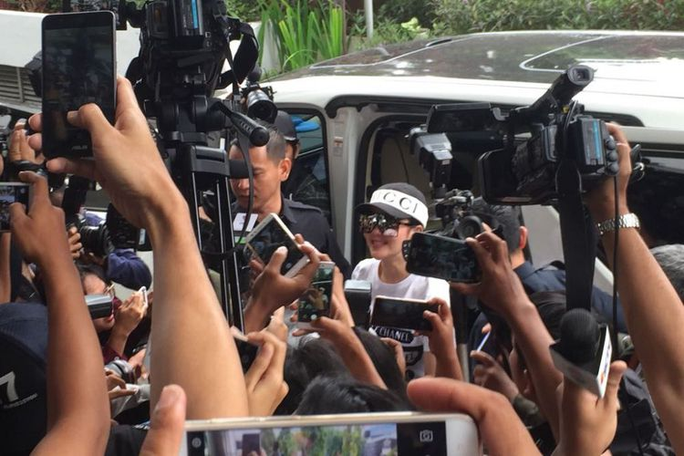

Syahrini: Saya Tergencet Manja Saat Tiba di Bareskrim Polri
TRI SUSANTO SETIAWAN
KabarKabur.com -27/09/2017, 13:05 WIB

Penyanyi Syahrini diperiksa oleh Bareskrim Mabes Polri sebagai saksi atas kasus dugaan penipuan oleh First Travel di Bareskrim Mabes Polri, Jalan Merdeka Timur, Jakarta Pusat, Rabu (27/9/2017).
KabarKabur.com - Penyanyi Syahrini mengaku tergencet saat mendatangi Bareskrim Mabes Polri lantaran memenuhi panggilan polisi untuk diperiksa sebagai saksi atas kasus dugaan penipuan oleh First Travel.
Lewat akun Instagram-nya, @princessyahrini, ia mengunggah video Insta Story ketika sesudah sampai di kantor Bareskrim Polri, Jalan Merdeka Timur, Jakarta Pusat, Rabu (27/9/2017)
"Dengan para kekasih hati awak media, tergencet manja, terombang ambing manja, lautan kamera-kamera itu," kata Syahrini dalam penggalan video ketika berada di lift untuk menuju ruang pemeriksaan.
Syahrini tiba pada pukul 11.50 WIB bersama manajernya, Rani. Pelantun lagu "Sesuatu" itu datang dengan kendaraan pribadinya, Toyota Alphard berwarna putih.
Mengenakan pakaian serba putih, Syahrini diperiksa Bareskrim sebagai saksi lantaran pernah mempromosikan agen jasa perjalanan ibadah umrah tersebut.
Sebelumnya, polisi menetapkan Direktur Utama First Travel Andika Surachman dan istrinya, perancang Anniesa Hasibuan, sebagai tersangka kasus dugaan penipuan dan penggelapan.
Dalam kasus ini, First Travel menawarkan harga pemberangkatan umrah yang lebih murah dari agen travel lainnya. Pembeli tergiur dan memesan paket umrah.
Namun, hingga batas waktu yang dijanjikan, calon jemaah tak kunjung berangkat. Perusahaan itu kemudian dianggap menipu calon jemaah yang ingin melaksanakan umrah.
Selanjutnya, penyidik Direktorat Tindak Pidana Umum Bareskrim Polri berencana memeriksa sejumlah artis yang mempromosikan First Travel.
Di antara artis yang disebut-sebut terkait promosi First Travel ini adalah Ria Irawan, Syahrini, dan almarhum Jupe yang pernah menggunakan jasa First Travel.
penulis :Tri Susanto Setiawan
Editor :Kistyarini